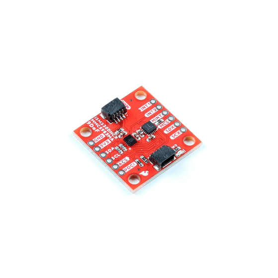
Arduino IDE • Bluetooth • Jupyter Notebooks
This lab is to serve as an introduction to using the IMU on the Artemis Nano microcontroller. We look at using the raw accelerometer and gyroscope data as well as applying low pass and complementary filters to provide more accurate pose estimates.
To use the IMU, we first need to install the ICM-20948 library, and plug in our IMU breakout board to the Artemis Nano via I2C as shown below.
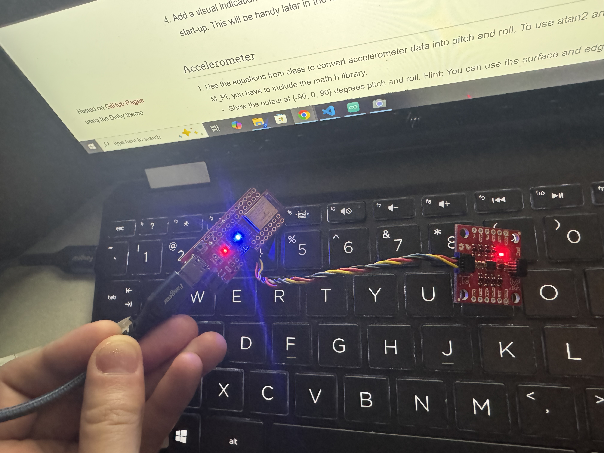
When setting up our IMU, we have an AD0_VAL definition that determines the I2C address of the IMU. In this case, we set it to 1 since we have the AD0 pin soldered high. If you have the AD0 pin soldered low, you will need to change this definition to 0, changing the I2C address of the IMU. Having these values allows you to setup multiple IMUs on the same I2C bus by setting one to have AD0_VAL of 1 and one to have AD0_VAL of 0, allowing for two different I2C addresses.
After setting up the library and wiring, we ran the example sketch to make sure we can read data from the IMU. The example sketch reads the raw accelerometer, gyroscope, and magnetometer data and prints it to the serial monitor. This data is as we expect, showing values around 0 for the gyroscope and magnetometer, and values around 1000 for the accelerometer in the z direction (since the IMU is stationary and experiencing 1g of acceleration in the z direction). Additionally, as we move the IMU around, we see the accelerometer and gyroscope values change as expected, confirming that we are able to read data from the IMU correctly. The gyroscope data is in units of degrees per second, so as we move the IMU faster, we see larger values in the gyroscope data. The accelerometer data is in units of milli-g's, so we see values around 1000 in the z direction when the IMU is stationary, and as we move the IMU around, we see the accelerometer values change as expected based on the orientation and movement of the IMU.
To add blinking to the startup of our program to determine when we are running, we add the following code to the setup
// initialize digital pin LED_BUILTIN as an output.
pinMode(LED_BUILTIN, OUTPUT);
delay(50);
int i;
for (i=0; i < 3; i++)
{
digitalWrite(LED_BUILTIN, LOW); // turn the LED off
delay(1000); // wait for a second
digitalWrite(LED_BUILTIN, HIGH); // turn the LED on
delay(1000); // wait for a second
}
To transform our gravity vector from the accelerometer into pitch and roll angles, we can use the following equations from lecture:
void acc2angle(ICM_20948_AGMT_t agmt, double* pitch, double* roll)
{
// Converts the accelerometer data from IMU (agmt) into pitch, roll, and yaw
// agmt is the input variable
// pitch and roll are output variables
*pitch = atan2(agmt.acc.axes.x, agmt.acc.axes.z);
*roll = atan2(agmt.acc.axes.y, agmt.acc.axes.z);
}
And then we can use the following code to print the pitch and roll values to the serial monitor in degrees. We can see that as we tilt the IMU around, we get reasonable values for the pitch and roll angles based on how we are tilting the IMU.
acc2angle(myICM.agmt, &pitch, &roll);
SERIAL_PORT.print("Pitch: ");
printFormattedFloat(pitch *180/M_PI, 5, 2);
SERIAL_PORT.print(" Roll: ");
printFormattedFloat(roll *180/M_PI, 5, 2);
SERIAL_PORT.println("");
delay(30);From the video, we can see that as we tilt the IMU from 90 to -90 degrees in pitch and roll, we get reasonable values for the pitch and roll angles based on how we are tilting the IMU. From this, I've concluded that we don't need to do any two point calibration for the accelerometer since at 90 degrees, we get values close to 90 degrees, and at -90 degrees, we get values close to -90 degrees.
Before proceeding, we port over the acc2angle function, blue LED setup, and IMU setup to our bluetooth sketch. We can then use the bluetooth connection to read the pitch and roll data from the IMU and send it to our computer. We can then use Jupyter notebooks to read the serial data and plot it in real time.
case GET_PITCH_AND_ROLL:
{
// Get pitch and roll from the IMU and send back as a string
// INPUTS: "Rad" or "Deg"
char char_arr[MAX_MSG_SIZE];
success = robot_cmd.get_next_value(char_arr);
if (!success)
return;
double pitch, roll;
int timeSinceStart;
ICM_20948_AGMT_t agmt;
for (int i = 0; i < FFT_SIZE; i++)
{
while (!myICM.dataReady()) {
// Wait for IMU data to be ready
delay(5);
}
agmt = myICM.getAGMT();
acc2angle(agmt, &pitch, &roll);
if (strcmp(char_arr, "DEG") == 0) {
// Convert to degrees
pitch = pitch * 180 / M_PI;
roll = roll * 180 / M_PI;
}
timeSinceStart = millis();
// append values for FFT processing
if (pitchSampleCount < FFT_SIZE) {
pitchBufferA[pitchSampleCount] = (float32_t)pitch;
rollBufferA[pitchSampleCount] = (float32_t)roll;
IMUtimeBuffer[pitchSampleCount] = timeSinceStart;
pitchSampleCount++;
}
}
for (int i=0; i < FFT_SIZE; i++)
{
tx_estring_value.clear();
tx_estring_value.append("P:");
tx_estring_value.append(pitchBufferA[i]);
tx_estring_value.append("R:");
tx_estring_value.append(rollBufferA[i]);
tx_estring_value.append("T:");
tx_estring_value.append(IMUtimeBuffer[i]);
tx_characteristic_string.writeValue(tx_estring_value.c_str());
}
break;
}Code to plot the pitch and roll data in a Jupyter notebook:
We can also perform a Fourier transform on the data to analyze the frequency content of the IMU data. This can be useful for identifying patterns or vibrations in the data that may not be visible in the time domain. Below is the code used to perform the Fourier transform on the pitch data from the IMU. This code was adapted from the PDM microphone FFT code provided in Lab 1. "Processing buffer" is the list of angle values and this outputs the magnitudes of the frequency components in the "magnitudes" array.
arm_rfft_fast_instance_f32 S;
arm_rfft_fast_init_f32(&S, FFT_SIZE);
arm_rfft_fast_f32(&S, processingBuffer, fft_output, 0);
arm_cmplx_mag_f32(fft_output, magnitudes, FFT_SIZE / 2);
Below are plots of of the Fourier transform of the pitch data when the IMU is when it is being shaken due to nearby car movement, when it is stationary, and being shaken by the table. When the IMU is being shaken by a car's movement, we can see that the fourier transform mostly consists of a DC offset and the other major components decay mostly by about 13Hz, which is what we will use for our cutoff frequency in a lowpass filter.
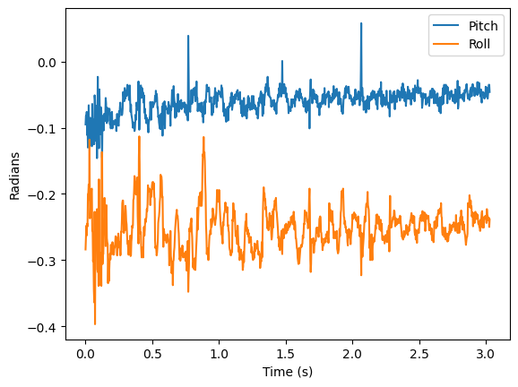
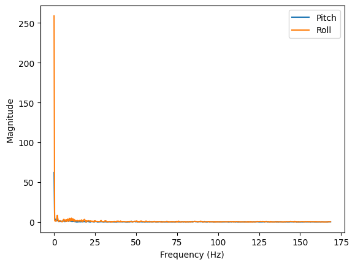
When the IMU is stationary, we can see that the fourier transform consists of a large DC offset and the other frequency components are mostly very small, which is what we would expect for stationary data with some noise. However, we want to eliminate some of this noise to get a more accurate reading of the pitch and roll angles, so we will implement a lowpass filter with a cutoff frequency of around 13Hz to filter out the high frequency noise in the data.
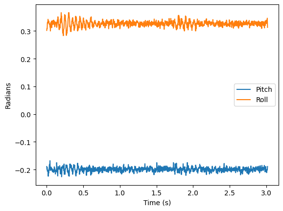
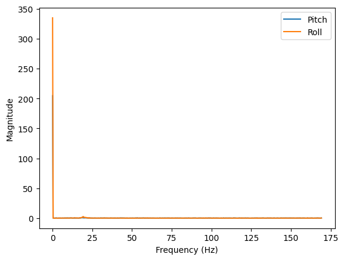
We can implement a lowpass filter by applying the equations from lecture by treating our data as an RC circuit as shown below:
float cutoff_freq = 13.0; // desired cutoff frequency in Hz
float sample_freq = pitchSampleCount/((timeStampArray[pitchSampleCount-1] - timeStampArray[0])/1000); // sampling frequency in Hz (number of IMU samples collected per second)
float dt = 1.0 / sample_freq;
float RC = 1.0 / (2 * M_PI * cutoff_freq);
float alpha = dt / (RC + dt);Applying this to our stationary data, we can see that the lowpass filter significantly reduces the noise in the data, allowing us to get a more accurate reading of the pitch and roll angles. We can also see that the lowpass filter preserves the general shape of the data, which is what we would expect since the cutoff frequency is high enough to preserve the main frequency components of the data while filtering out the high frequency noise.
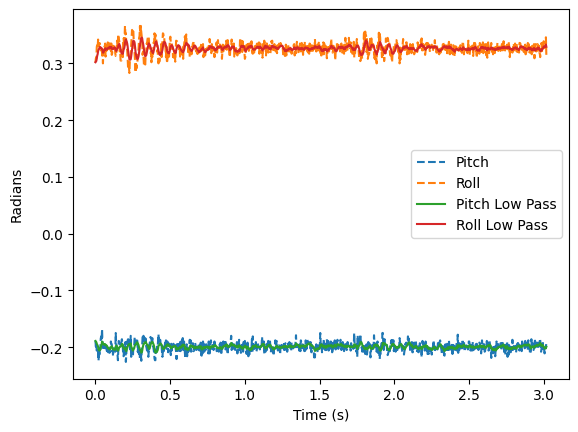
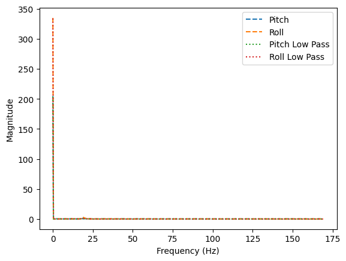
Zooming in on the FFT data without the DC component, gives us a better view of the frequency components in the data. We can see that the lowpass filter significantly reduces the magnitude of the frequency components above the cutoff frequency, greatly reducing the noise.
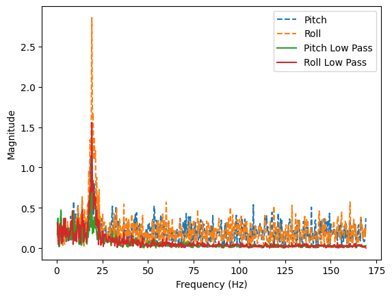
We also tested the robustness of the IMU and lowpass filter by shaking the table that the IMU is on. We can see that the lowpass filter significantly reduces the noise in the data, allowing us to still get a reasonable reading of the pitch and roll angles even when the IMU is being shaken by the table. The low pass filter reduced the magnitude of the shake as shown below:
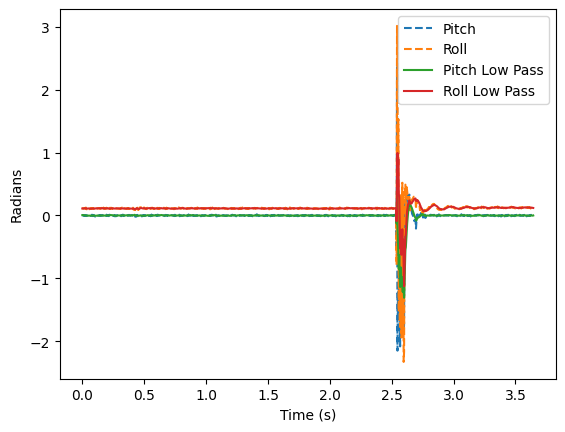
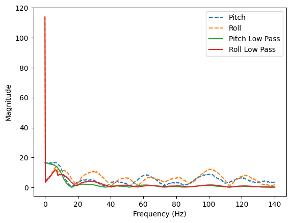
We can also use the gyroscope data from the IMU to get a reading of the pitch and roll angles. The gyroscope data gives us the angular velocity of the IMU, so we can integrate this data over time to get an estimate of the pitch and roll angles. However, the gyroscope data is subject to drift over time, so we can use a complementary filter to combine the accelerometer and gyroscope data to get a more accurate estimate of the pitch and roll angles. The complementary filter uses a weighted average of the accelerometer and gyroscope data, giving more weight to the accelerometer data at low frequencies (to correct for drift) and more weight to the gyroscope data at high frequencies (to preserve fast movements). Below is the equations and code to integrate the gyroscope data.
timeSinceStart = millis();
float dt = (timeSinceStart - last_timestamp) / 1000.0; // Convert ms to seconds
last_timestamp = timeSinceStart;
float gyrX = myICM.gyrX();
float gyrY = myICM.gyrY();
float gyrZ = myICM.gyrZ();
gyro_pitch += gyrY * dt;
gyro_roll += gyrX * dt;
gyro_yaw += gyrZ * dt;We can see a plot of the gyroscope data integrated over time below as we keep the IMU steady. We can see that the gyroscope data gives us a reading of the pitch and roll angles that is similar to the accelerometer data, but it is subject to drift over time.
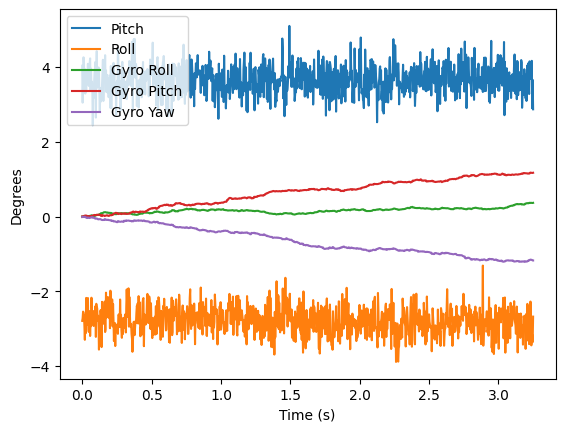
We can also see plots of the gyroscope output when we move the IMU around. We can see that the gyroscope data captures the fast movements of the IMU since it is much smoother than the accelerometer data, but it is also subject to drift over time, which is why we need to use a complementary filter to combine the accelerometer and gyroscope data to get a more accurate estimate of the pitch and roll angles.
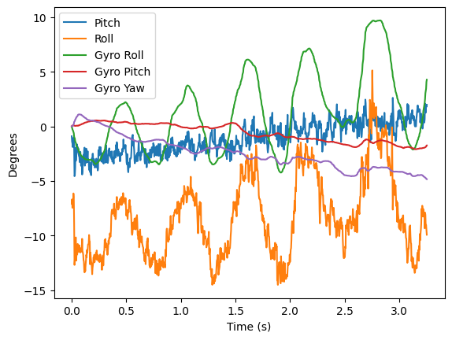
Additionally, we can see that if we increase the delay in our loop (in this case, we're introducing an extra delay of 20ms between measurements), we get more drift and choppiness in the gyroscope data since we are integrating over a longer period of time, which is why it is important to have a fast loop when using the gyroscope data to get an estimate of the pitch and roll angles.
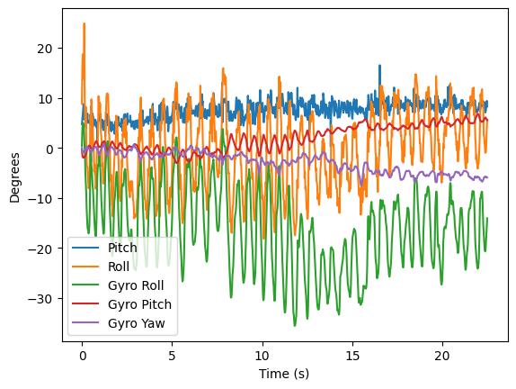
Finally, we can implement a complementary filter to combine the accelerometer and gyroscope data to get a more accurate estimate of the pitch and roll angles. The complementary filter uses a weighted average of the accelerometer and gyroscope data, giving more weight to the accelerometer data at low frequencies (to correct for drift) and more weight to the gyroscope data at high frequencies (to preserve fast movements). Below is the code to implement the complementary filter. The alpha value determines the weight given to the gyroscope data versus the accelerometer data. A higher alpha value gives more weight to the gyroscope data, while a lower alpha value gives more weight to the accelerometer data. Since the accelerometer data is noisy but doesn't drift, and the gyroscope data is smooth but drifts over time, we want to choose an alpha value that balances these two factors. In this case, we chose an alpha value of 0.06, which gives more weight to the accelerometer data to correct for drift while still preserving some of the fast movements captured by the gyroscope data. The yaw angle is not included in the complementary filter since we are not using the magnetometer data to get an estimate of the yaw angle, so the yaw angle is just integrated from the gyroscope data and is subject to drift over time. In this example, I shake the IMU around to show how the complementary filter is able to capture the fast movements of the IMU while also correcting for drift over time, resulting in a smoother and more accurate reading of the pitch and roll angles compared to using just the accelerometer or gyroscope data alone, which the filter does a fairly good job of.
float alpha = 0.06; // weight for the gyroscope data
pitch = alpha * (pitch + gyrY * dt) + (1 - alpha) * acc_pitch;
roll = alpha * (roll + gyrX * dt) + (1 - alpha) * acc_roll;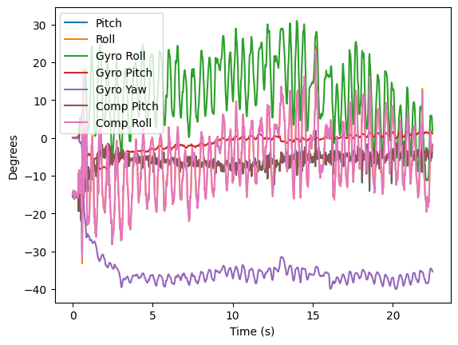
We can move the IMU collection code around to our main loop by including it under the write_data() function in our bluetooth sketch. This allows us to continuously collect data from the IMU and send it over bluetooth to our computer, where we can read it in real time and plot it using Jupyter notebooks. We can toggle the data collection on and off by sending a command over bluetooth, allowing us to collect data when we want to and not collect data when we don't want to. The function to collect the data is shown below, and it collects both the pitch and roll data from the IMU, applies a complementary filter to get a more accurate estimate of the angles, which can then later be sent over bluetooth in a string format that can be easily parsed in Python.
void collect_IMU_data() {
if (!myICM.dataReady())
{
// Wait for IMU data to be ready
return;
}
agmt = myICM.getAGMT();
acc2angle(agmt, &pitch, &roll);
if (strcmp(char_arr, "DEG") == 0)
{
// Convert to degrees
pitch = pitch * 180 / M_PI;
roll = roll * 180 / M_PI;
}
timeSinceStart = millis();
// calculate angle from gyro data and append to buffer for FFT processing
float dt = (timeSinceStart - last_timestamp) / 1000.0; // Convert ms to seconds
last_timestamp = timeSinceStart;
float gyrX = myICM.gyrX();
float gyrY = myICM.gyrY();
float gyrZ = myICM.gyrZ();
gyro_pitch += gyrY * dt;
gyro_roll += gyrX * dt;
gyro_yaw += gyrZ * dt;
float alpha = 0.06;
c_pitch = alpha * (c_pitch + gyrY * dt) + (1 - alpha) * pitch;
c_roll = alpha * (c_roll + gyrX * dt) + (1 - alpha) * roll;
// append values for FFT processing
if (pitchSampleCount < FFT_SIZE)
{
pitchBufferA[pitchSampleCount] = (float32_t)pitch;
rollBufferA[pitchSampleCount] = (float32_t)roll;
IMUtimeBuffer[pitchSampleCount] = timeSinceStart;
gyroBufferX[pitchSampleCount] = gyro_roll;
gyroBufferY[pitchSampleCount] = gyro_pitch;
gyroBufferZ[pitchSampleCount] = gyro_yaw;
compBufferPitch[pitchSampleCount] = c_pitch;
compBufferRoll[pitchSampleCount] = c_roll;
pitchSampleCount++;
}
}void loop()
{
// Listen for connections
BLEDevice central = BLE.central();
// If a central is connected to the peripheral
if (central)
{
Serial.print("Connected to: ");
Serial.println(central.address());
// While central is connected
while (central.connected())
{
// Send data
write_data();
if (IMU_ON)
{
collect_IMU_data();
}
// Read data
read_data();
}
Serial.println("Disconnected");
}
}We can collect the data at a rate of about 350Hz. I like to have separate arrays for storing the accelerometer and gyroscope data for debugging purposes, but we can also just have one array that stores the complementary filter output if we want to simplify our code and only care about the final angle estimates. Having just one array for the complementary filter output also allows us to easily send this data over bluetooth without having to worry about sending both the accelerometer and gyroscope data separately and then having to parse it on the Python side to combine it back together, since the complementary filter output already combines the accelerometer and gyroscope data into a single estimate of the pitch and roll angles. It also saves on memory since we don't have to store both the accelerometer and gyroscope data separately, which can be important on a microcontroller with limited memory. Also, I use floats to store the angle data since it allows for more precision in the angle estimates, which can be important for certain applications where we need more accurate angle measurements, and because the FFT code inputs a float array, so using floats allows us to easily perform the FFT on the angle data without having to convert it from integers to floats first, which can save on processing time and simplify our code. With a 32-bit float array, and if we store 3 arrays of complementary filter output (comp_pitch, comp_roll, and gyro_yaw), we can store up to about 32,000 samples in memory (384KB in Ram/(3*4)), which is about 45.68 seconds worth of data.
Also, below is an image of the range of time stamped data sent from the Artemis Nano to the computer over bluetooth. We can see that we are able to send data for about 22 seconds here which is more than 5 seconds.
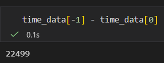
From playing around with the car, I have found that it is very hard to do a manual wheelie. The car is quick at accelerating and spinning, but drifts on this carpet. Additionally, When going straight forwards and back, it drifts to its right, which might be due to the carpet or the fact that the motors are not perfectly tuned to have the same speed.
ChatGPT was used to help format parts of this website and report as well as writing the FFT code in C. Aiden McNay's website and Lucca Corrial's website was used as a reference for the FFT plots.